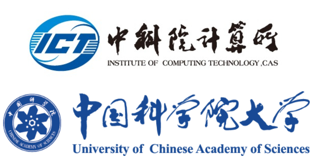

Chenxi Wang (王晨曦)
Associate professor
Institute of Computing Technology (ICT)
Chinese Academy of Sciences (CAS)
University of Chinese Academy of Sciences (UCAS)
Email: wangchenxi@ict.ac.cn

News
News: Atlas is accepted to OSDI'24. Congrats to Lei and Shi! The first student OSDI paper of ICT, CAS.
News: Serve on the PC of NSDI 2025, ASPLOS 2025 and USENIX ATC 2024.
News: Occamy is accepted to ASPLOS'23. Congrats to Zhongcheng and all the collaborators!
News: Awarded the ACM SIGOPS China Rising Star
News: Hermit is accepted to NSDI'23. Congrats to Yifan and all the collaborators!
News: Canvas is accepted to NSDI'23. Congrats to Yifan and all the collaborators!
News: MemLiner awarded the Jay Lepreau Best Paper Award at OSDI'22. Congrats to Haoran and the great team!
I am actively looking for self-motivated master and Ph.D. students. Please contact me if you are interested in system research!
About me
I'm an associate professor in the Institute of Computing Technology (ICT), Chinese Academy of Sciences (CAS). I worked as a postdoc at UCLA working with Dr. Harry Xu. I got my Ph.D. degree from the Institute of Computing Technology, Chinese Academy of Sciences in 2018, under the supervision of Dr. Xiaobing Feng. I got my Bachelor degree from Tianjin University in 2013. My research interest is to build hard-core systems, managed runtime and big data systems for emerging hardware, such as non-volatile memory and resource-disaggregated datacenter.
View My Github
Research
My current research is to build cross-layer systems for warehouse-scale computers.
Runtime for Hybrid Memory
Non-volatile memory(NVM) was developed to satisfy the rapidly increasing memory demand of data-intensive applications. Compared to DRAM, NVM offers much larger capacity, lower price, and higher energy efficiency. On the downside, NVM has longer access latency and lower read/write bandwidth. Therefore, cloud infrastructures often deploy NVM together with DRAM in a hybrid manner.
To maximize the energy savings and minimize the performance impact of hybrid memory, I have built several runtime systems, Panthera[PLDI'19] [NPC'16] [TOCS'22] to manage the data layout of cloud applications. These systems are built on two major insights. First, the data objects of many cloud applications exhibit strong epoch behaviors and clear access patterns at a coarse granularity. Hence, I proposed to manage data layout at coarse-grained, e.g., data structure and function, by utilizing applications' semantics to save the monitoring overhead. Second, the runtime performs periodical garbage collection (GC) to trace and compact the alive data. Hence, utilizing GC to adjust the data layout brings no extra migration overhead.
Resource Disaggregation
As an emerging datacenter architecture, resource-disaggregation aims to reorganize datacenter hardware of each kind into their dedicated resource servers to improve resource utilization and fault tolerance, and simplify hardware adoption. These servers are connected by advanced network fabrics a such as Infiniband and Intel Fabrics. As a result, the cloud application running on the resource-disaggregated cluster can get compute and memory resources from different servers.
#1 Runtime for Disaggregated Memory
I developed a series of runtime systems to improve the data locality and reduce the resources racing problems of cloud applications running on the resource-disaggregated datacenter. Semeru[OSDI'20] separates the application threads and GC tracing threads of one program and schedules them to corresponding CPU servers and memory servers. As a result, the GC threads can run concurrently and continuously on the memory servers without interfering with the application threads running on CPU servers. At the same time, we also proposed Mako[PLDI'22], a low-pause, concurrent compaction algorithm for the resource-disaggregated cluster. MemLiner[OSDI'22] lines up the memory access of application threads and GC threads to reduce their interference, resulting in a small working set and clean access patterns for the prefetcher.
#2 Swap System for Disaggregated Memory
The existing paging and swap system are often used to manage the remote memory server. However, the current swap data plane was designed long ago for slow disk-based swapping, and hence can become a major performance bottleneck when fast remote memory is used, such as 1) lack of performance isolation and (2) poor scalability. To solve these problems, I redesigned the swap system, Canvas[NSDI'23], to provide holistic resources isolation and adaptive management strategies, e.g., swap-entry allocation, prefetching and scheduling, for the diverse cloud applications.
Students
- Lei Chen (Ph.D. student starting Fall 2018, co-advised with Prof. Huimin Cui)
- Jiawei Xiao (Ph.D. student starting Fall 2018, co-advised with Prof. Xiaobing Feng)
- Quanxi Li (Ph.D. student starting Fall 2020, co-advised with Prof. Xiaobin Feng)
- Shengkai Li (Ph.D. student starting Fall 2023, co-advised with Prof. Huimin Cui)
- Yulong Zhang (Ph.D. student starting Fall 2023, excellent undergraduate thesis, co-advised with Prof. Xiaobing Feng)
- Yizhe Yuan (M.S. student starting Fall 2023)
I am lucky to work with the following undergraduate and graduate students.
- Haoran Ma (Ph.D student at UCLA, starting Fall 2019)
- Yifan Qiao (Ph.D student at UCLA, starting Fall 2019)
- Shi Liu (Ph.D student at UCLA, starting Fall 2020)
- Junhao Hu (Ph.D student at Peking University, starting Fall 2022)
- Ziyue Hua (Ph.D student at Peking University, starting Fall 2022)
- Xiangyun Deng (Ph.D student at Peking University, starting Fall 2023)
- Yilong Luo (Undergraduate student at Peking University)
- Hong Huang (Undergraduate student at Beihang University)
- Tiancheng Hu (Undergraduate student at HUST)
- Yuzheng Wang (Undergraduate student at HUST)
- Chenxiao Liu (Ph.D. student at ICT, CAS)
Service
- NSDI 2025, Program Committee
- ASPLOS 2025, Program Committee
- USENIX ATC 2024, Program Committee
- The 23rd Chinasys (ACM SIGOPS China), Program Co-Chair
- ACM Asia-Pacific Workshop on Systems, APSys 2022, Program Committee, Publicity Chair
- Virtual Execution Environments, VEE 2022, Program Committee
- Architectural Support for Programming Languages and Operating Systems, ASPLOS 2022, External Review Committee (ERC)
- Virtual Execution Environments, VEE 2021, Program Committee
- ACM SIGPLAN International Symposium on Memory Management, ISMM 2021, External Review Committee (ERC)
- ISC High Performance 2020, Programming Models & Systems Software track, Program Committee
- Serve as a reviewer for transactions, ACM Transactions on Architecture and Code Optimization (TACO), ACM Transactions on Software Engineering and Methodology (TOSEM), Concurrency and Computation: Practice and Experience, etc.
Selected publications
(Asterisk(*) means corresponding author)
Conferences
- A Tale of Two Paths: Toward a Hybrid Data Plane for Efficient Far-Memory Applications
by Lei Chen, Shi Liu(co-first), Chenxi Wang*, Haoran Ma, Yifan Qiao, Zhe Wang, Chenggang Wu, Youyou Lu, Xiaobing Feng, Huimin Cui, Shan Lu, Guoqing Harry Xu
The USENIX Symposium on Operating Systems Design and Implementation (OSDI), 2024
- Enabling Large Dynamic Neural Network Training with Learning-based Memory Management
by Jie Ren, Dong Xu, Shuangyan Yang, Jiacheng Zhao, Zhicheng Li, Christian Navasca, Chenxi Wang, Harry Xu, Dong Li
The IEEE International Symposium on High-Performance Computer Architecture (HPCA), 2024
- OCCAMY:Elastically Sharing an On-chip Vector Co-processor Across Multiple Cores
by Zhongcheng Zhang, Yan Ou, Ying Liu, Chenxi Wang, Yongbin Zhou, Xiaoyu Wang, Yuyang Zhang, Yucheng Ouyang, Jiahao Shan, Ying Wang, Jingling Xue, Huimin Cui, Xiaobing Feng
The ACM International Conference on Architectural Support for Programming Languages and Operating Systems (ASPLOS), 2023
- Hermit:Low-Latency, High-Throughput, and Transparent Remote Memory via Feedback-Directed Asynchrony
by Yifan Qiao, Chenxi Wang*, Zhenyuan Ruan, Adam Belay, Qingda Lu, Yiying Zhang, Miryung Kim, Guoqing Harry Xu*
The USENIX Symposium on Networked Systems Design and Implementation (NSDI), 2023
- Canvas:Isolated and Adaptive Swapping for Multi-Applications on Remote Memory
by Chenxi Wang, Yifan Qiao(co-first), Haoran Ma, Shi Liu, Yiying Zhang, Wenguang Chen, Ravi Netravali, Miryung Kim, Guoqing Harry Xu
The USENIX Symposium on Networked Systems Design and Implementation (NSDI), 2023
- MemLiner: Lining up Tracing and Application for a Far-Memory-Friendly Runtime
by Chenxi Wang, Haoran Ma(co-first), Shi Liu, Yifan Qiao, Jonathan Eyolfson, Christian Navasca, Shan Lu, Guoqing Harry Xu
The USENIX Symposium on Operating Systems Design and Implementation (OSDI), 2022, (★Jay Lepreau Best Paper Award)
- Mako: A Low-Pause, High-Throughput Evacuating Collector for Memory-Disaggregated Datacenters
by Haoran Ma, Shi Liu, Chenxi Wang*, Yifan Qiao, Michael D. Bond, Steve Blackburn, Miryung Kim, Guoqing Harry Xu*
The ACM SIGPLAN Conference on Programming Language Design and Implementation (PLDI), 2022
- Semeru: A Memory-Disaggregated Managed Runtime
by Chenxi Wang, Haoran Ma, Shi Liu, Yuanqi Li, Zhenyuan Ruan, Khanh Nguyen, Michael Bond, Ravi Netravali, Miryung Kim, Guoqing Harry Xu
The USENIX Symposium on Operating Systems Design and Implementation (OSDI), 2020
- Panthera: Holistic Memory Management for Big Data Processing over Hybrid Memories
by Chenxi Wang, Huimin Cui, Ting Cao, John Zigman, Haris Volos, Onur Mutlu, Fang Lv, Xiaobing Feng, Guoqing Harry Xu
The ACM SIGPLAN Conference on Programming Language Design and Implementation (PLDI), 2019
- Efficient Management for Hybrid Memory in Managed Language Runtime
by Chenxi Wang, Ting Cao, John Zigman, Fang Lv, Yunquan Zhang, Xiaobing Feng
IFIP International Conference on Network and Parallel Computing (NPC), 2016, (Acceptance rate 17%)
Journals
- SPECBOX: A Label-Based Transparent Speculation Scheme Against Transient Execution Attacks
by Bowen Tang, Chenggang Wu, Zhe Wang, Lichen Jia, Pen-Chung Yew, Yueqiang Cheng, Yinqian Zhang, Chenxi Wang, Guoqing Harry Xu
IEEE Transactions on Dependable and Secure Computing (TDSC), 2022
- Unified Holistic Memory Management Supporting Multiple Big Data Processing Frameworks over Hybrid Memories
by Chen Lei, Jiacheng Zhao, Chenxi Wang, Ting Cao, John Zigman, Haris Volos, Onur Mutlu, Fang Lv, Xiaobing Feng, Guoqing Harry Xu, Huimin Cui
ACM Transactions on Computer Systems (TOCS), 2022
- Systemizing Interprocedural Static Analysis of Large-Scale Systems Code with Graspan
by Zhiqiang Zuo, Kai Wang, Aftab Hussain, Ardalan Amiri Sani, Yiyu Zhang, Shenming Lu, Wensheng Dou, Linzhang Wang, Xuandong Li, Chenxi Wang, Guoqing Harry Xu
ACM Transactions on Computer Systems (TOCS), 2021
- NVM Streaker: a fast and reconfigurable performance simulator for non-volatile memory-based memory architecture
by Danqi Hu, Fang Lv, Chenxi Wang, Huimin Cui, Lei Wang, Ying Liu, Xiaobing Feng
Journal of Supercomputing, 2018
Workshops
- Skadi: Building a Distributed Runtime for Data Systems in Disaggregated Data Centers
by Cunchen Hu, Chenxi Wang, Sa Wang, Ninghui Sun, Yungang Bao, Jieru Zhao, Sanidhya Kashyap, Pengfei Zuo, Xusheng Chen, Liangliang Xu, Qin Zhang, Hao Feng, Yizhou Shan
The Workshop on Hot Topics in Operating Systems (HotOS), 2023
- SemSwap: Semantics-Aware Swapping in Memory Disaggregated Datacenters
by Siwei Cui, Liuyi Jin, Khanh Nguyen, Chenxi Wang
ACM SIGOPS Asia-Pacific Workshop on Systems (APSys), 2022
Rumor has it that Chenxi has no mercy : )